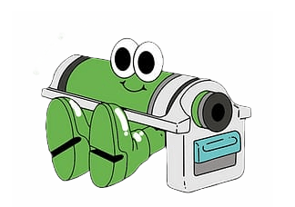
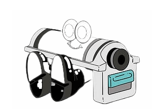
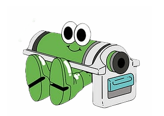
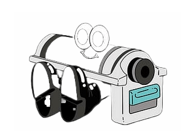
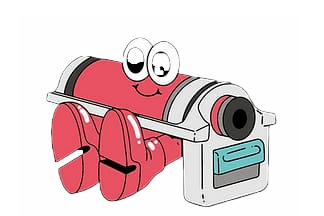
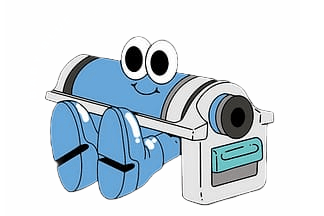
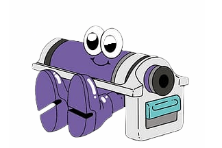
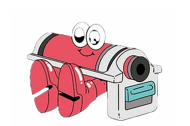
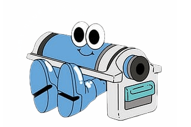
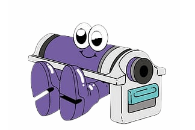

@mothclub for the 👌@friendsserene fair today. Last
editions of the first
Dopple Drop and an IRL launch of the new collection! ✨
🐸 Sales on baby, go snap up some lil frogs to keep you
company
through the
seasons! 🐸
Holy Smokes! The Dopple Press website is a ✨Grand
Prize Winner✨! Thanks so much
to all involved at @wix . I'm super grateful for all the work gone into the competition process and the nod
of
recognition this brings. The site was very much a labour of love and the culmination of many
☻ FLASH SALE ☻ Ahead of the imminent drop of great
new collaborations we are
celebrating with some sweet discounts on everything(!) from Dopple's first drop! Head over to Dopple.Shop
to
snap up some amazing work and support the 10/10 artists who made it! 🏁 Don't forget to subscribe to the
mailing
list to find
Dopple Shop’ gunna be touting its wears at
@wearebif this weekend! Sneak peaks
of the ✨second drop✨ AND sharing a table with top lad @bridget_m_ who’s undoubtedly made some bloody
lovely
goods you didn’t know you needed but can’t not get- see ya there homies!
Quick deal for the @wearebif folk next weekend
drop an email and artwork to
Studio@dopplepress.com before 12pm monday for 10% off your print run 🕺🧡 Dopple Shop will be there
with all the
wears too woo!
Throwback to one of the first zines I printed
for the ace @_joeypearson and
j.ruebentattoo! Who Shot Mr Smithers! I'm thinking of starting up a fun zine submission section in
reels/highlights to shout out cool ones people want to share - would
Spooky Frog O'clock! For those who love,
pumpkins and frogs Dopple and
@drawinfrogs got ya back! These 2 Colour Art Prints from @drawinfrogs hand stamped and editioned, you
can write
on the back and give them to someone you love if you like. Or you could
Frrrreeeeebee! Wana riso but the setup is
putting you off? Well this is the one
for you! Free print set up on all jobs till the end of the month, just drop over an email via the
quote forms on
the 'Print Options' section of the website to get rolling 🏌️
@marco_oggian Monsters framed in all their
glory riso! Super limited, hand
stamped and editioned. Check um out on the Dopple Shop (Link in Linktree👾) and see what Marco had to
say on the
Dopple Blog for more insite into his creative


 



 




